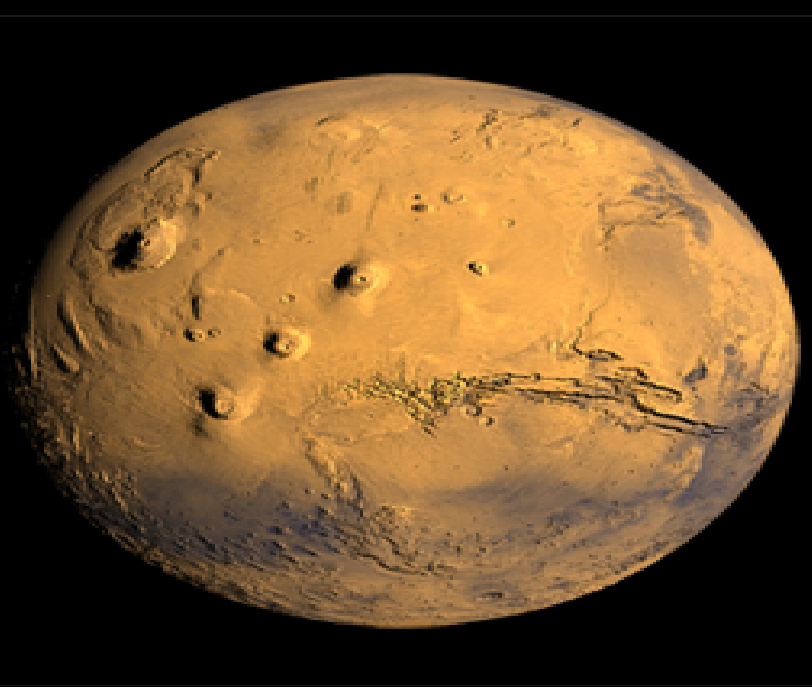

The effort, known as the Mars Atmosphere and Volatile Evolution, or MAVEN, mission, will explore the past climate of Mars, including its potential for harboring life over the ages. LASP is leading the mission, which will carry three instrument suites to probe the atmosphere of Mars and its interactions with the sun. LASP Associate Director and CU professor Bruce Jakosky is principal investigator on the mission.
Back to Home